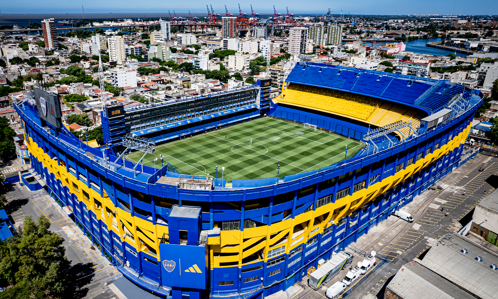

Estadio
La Bombonera, el temblo del fútbol.
El Estadio Alberto J. Armando, popularmente conocido como La Bombonera, es un estadio de fútbol perteneciente al Club Atlético Boca Juniors, ubicado en el barrio de La Boca en la ciudad de Buenos Aires, Argentina. Reconocido por diversos medios nacionales e internacionales como uno de los más emblemáticos del mundo, y declarado de interés deportivo, turístico y artístico de la ciudad de Buenos Aires, fue inaugurado el 25 de mayo de 1940.
Tiene tres lados compuestos de tres bandejas ligeramente curvas, y un cuarto lado que se compone de una estructura sencilla y aislada que no tiene relación con el diseño arquitectónico del resto, debido a que originalmente el diseño abarcaba el doble del espacio que finalmente pudo ser utilizado. La razón de su diseño compacto fue que se debía construir el nuevo estadio en el mismo solar donde se encontraba el anterior, de madera y mucho más pequeño. Al construir un estadio grande en un predio muy reducido, fue necesario edificar las bandejas muy juntas una sobre otra, y las superiores se encuentran muy adelantadas con respecto a las inferiores, creando una pendiente pronunciada y poco común. Este diseño atrevido crea, según los simpatizantes y algunos jugadores, una atmósfera compacta y vibrante, que derivó en la frase popular La Bombonera.
A nivel continental, el estadio de Boca es conocido por ser una «fortaleza» para el equipo. De hecho, a 6 de marzo de 2023, Boca solo perdió catorce veces (con Santos, Alianza Lima, Independiente, Cruzeiro, Vélez, Cruz Azul, Paysandú, Defensor Sporting, Fluminense, Deportivo Toluca, Nacional, Independiente del Valle y Palmeiras) en 160 partidos en 58 años de Copa Libertadores. De esta cifra, también se deprende que el Xeneize logró más del 91,25 % de los puntos en juego. Por esta razón, Boca Juniors como local en La Bombonera es uno de los equipos que mejor promedio histórico tiene en la mayor competencia continental. En 1940, Ricardo Alarcón, a los 12 minutos de juego, se convirtió en el primer jugador en marcar en el nuevo estadio, hecho que también repitió unos días después, el 12 de junio de ese mismo año, cuando se disputó el primer partido de un torneo oficial, contra Newell's Old Boys, y que terminó con el mismo resultado que el anterior
Ubicacion
Localización
País: Argentina
Localidad: Brandsen 805, La Boca, Buenos Aires.
Coordenadas: 34°38′08″S 58°21′53″O